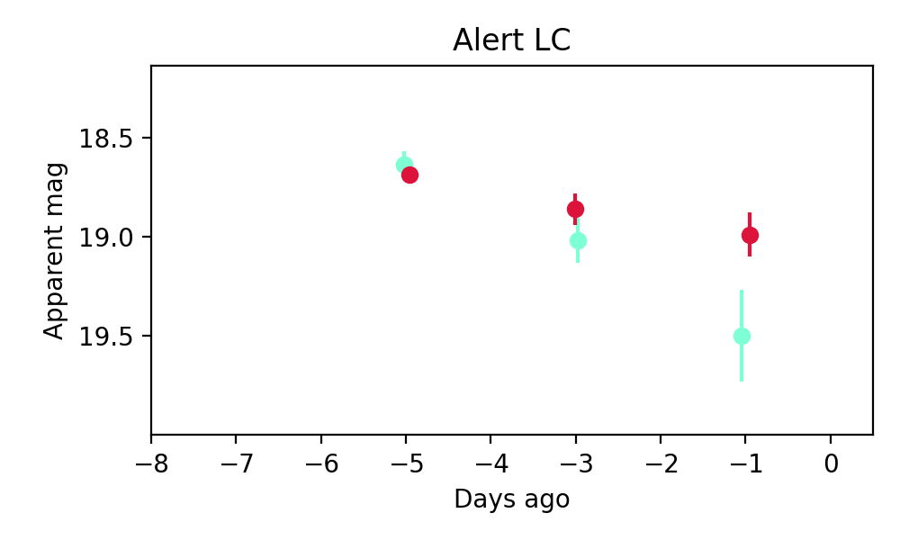
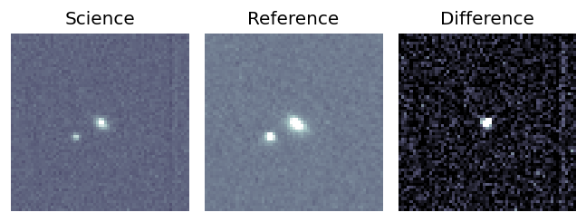
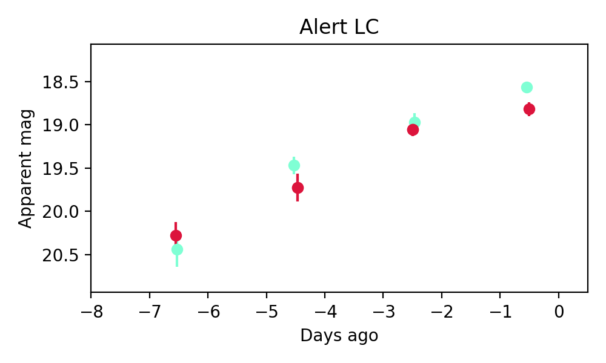
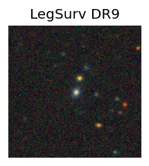
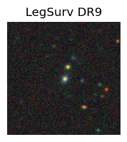

Candidate List 20250909Previous Day Next Day
Section 1: New Sources (age<1d) Section 2: Old (1-5d) sources observed last nightplaceholder
Section 1: New Afterglow/FBOT Cands Last Night (0)
Section 2: Older Sources Observed Last Night (5)
0. ZTF25aboyjss (Afterglow?) [Back to Top] [Share] [Trigger Swift] [Fritz] [Lasair]RA, Dec: 86.956, 9.51472 5h47m49.44s, 9d30m53.00sGalactic (l, b): 197.02304, -9.50554 ext(g-r) = 0.406

PS1: 0 sources in 3 arcsec
LegacySurvey: 0 sources in 3 arcsec

Extinction-corrected gr color:
From alerts: 0.1 +/- 0.26 mag
Consistent with synchrotron, g-r>0!
Rise Rate:
g: 0.03 mag/day
r: 0.04 mag/day
i: -99 mag/day
Fade Rate:
g: 0.2 mag/day
r: 0.08 mag/day
i: -99 mag/day
1. ZTF25aboyxot (FBOT?) [Back to Top] [Share] [Trigger Swift] [Fritz] [Lasair]RA, Dec: 61.5105, 25.95448 4h 6m2.52s, 25d57m16.14sGalactic (l, b): 168.55903, -19.21413 ext(g-r) = 0.288
PS1: 1 source in 3 arcsec Closest: d = 1.13 arcsec photoz=0.06+/-0.02 peak abs mag = -19.53
LegacySurvey: 0 sources in 3 arcsec

Extinction-corrected gr color:
From alerts: -0.11 +/- 0.13 mag
Consistent with synchrotron, g-r>0!
Rise Rate:
g: 0.24 mag/day
r: 0.17 mag/day
i: -99 mag/day
Fade Rate:
g: -99 mag/day
r: -99 mag/day
i: -99 mag/day
2. ZTF25abpfoxz (Afterglow?) [Back to Top] [Share] [Trigger Swift] [Fritz] [Lasair]RA, Dec: 283.10342, -14.77394 18h52m24.82s, -14d-46m-26.18sGalactic (l, b): 19.82837, -6.88879 ext(g-r) = 0.416

PS1: 0 sources in 3 arcsec
LegacySurvey: 0 sources in 3 arcsec

Extinction-corrected gr color:
From alerts: -0.36 +/- 0.14 mag
Rise Rate:
g: 0.63 mag/day
r: 0.42 mag/day
i: -99 mag/day
Fade Rate:
g: 0.29 mag/day
r: 0.34 mag/day
i: -99 mag/day
3. ZTF25abpgjdk (FBOT?) [Back to Top] [Share] [Trigger Swift] [Fritz] [Lasair]RA, Dec: 268.87344, 43.82571 17h55m29.63s, 43d49m32.55sGalactic (l, b): 70.41151, 28.09504 ext(g-r) = 0.038
SDSS (10 arcsec):Found SDSS phot-z: z=0.07; peak abs mag = -19.09
PS1: 0 sources in 3 arcsec
LegacySurvey: 1 sources in 3 arcsec Closest: d = 0.64 arcsec, 286.0 deg (east of north) photoz=0.09 (68% bounds 0.02, 0.48), type=PSF peak abs mag = -19.66 (68% bounds -15.97, -23.65)

Extinction-corrected gr color:
From alerts: -0.29 +/- 0.09 mag
Rise Rate:
g: 0.31 mag/day
r: 0.24 mag/day
i: -99 mag/day
Fade Rate:
g: -99 mag/day
r: -99 mag/day
i: -99 mag/day
4. ZTF25abpopdk (FBOT?) [Back to Top] [Share] [Trigger Swift] [Fritz] [Lasair]RA, Dec: 246.80443, 33.47215 16h27m13.06s, 33d28m19.73sGalactic (l, b): 54.53098, 43.506 ext(g-r) = 0.025
 

SDSS (10 arcsec):Found SDSS phot-z: z=0.15; peak abs mag = -20.32
PS1: 0 sources in 3 arcsec
LegacySurvey: 1 sources in 3 arcsec Closest: d = 0.93 arcsec, 236.5 deg (east of north) photoz=0.18 (68% bounds 0.13, 0.21), type=DEV peak abs mag = -20.64 (68% bounds -19.82, -21.05)

Extinction-corrected gr color:
From alerts: -0.1 +/- 0.2 mag
Consistent with synchrotron, g-r>0!
Rise Rate:
g: 0.19 mag/day
r: 0.32 mag/day
i: -99 mag/day
Fade Rate:
g: -99 mag/day
r: -99 mag/day
i: -99 mag/day